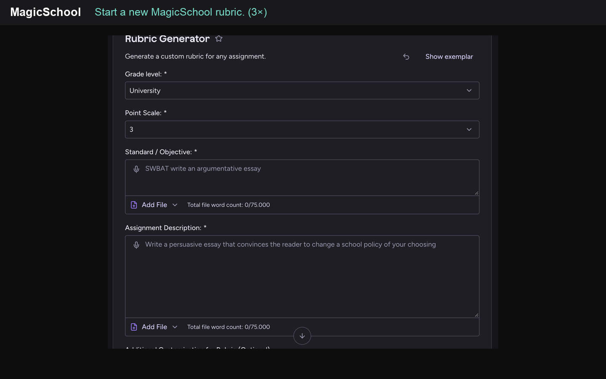
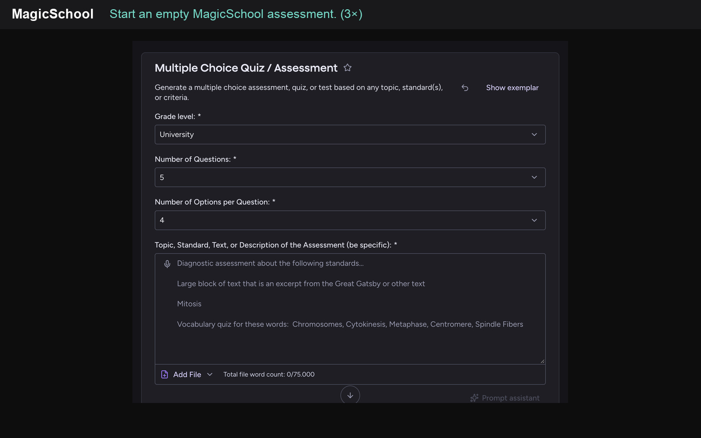
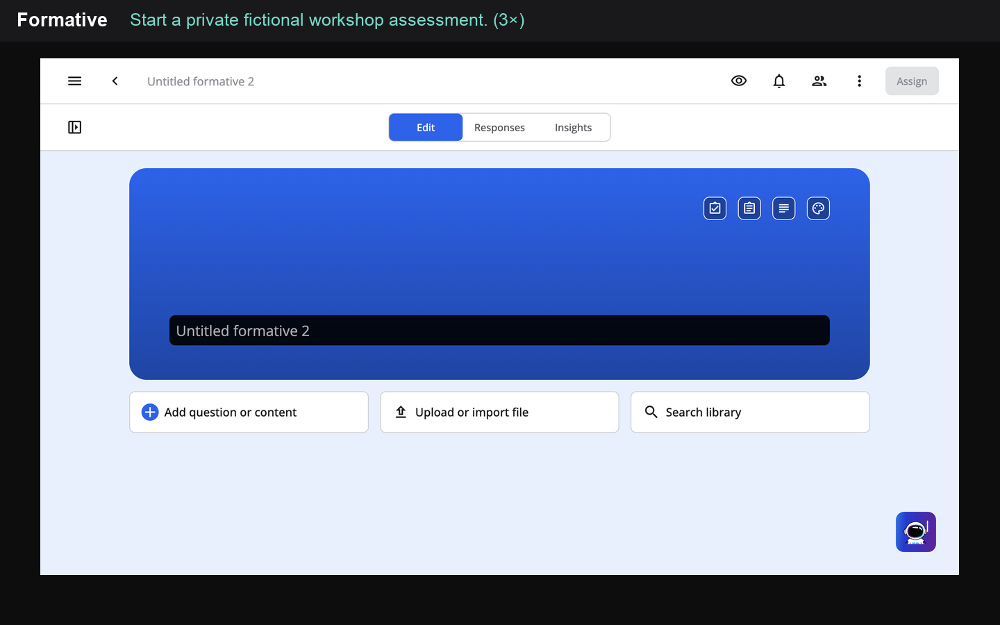

·

Recorded task
Create a four-level rubric for a second-year university student who studies the workshop chapter, builds a labelled diagram and independently explains language-model generation. Use exactly three criteria: concepts and relationships; process explanation; application and checking. Describe observable evidence at each level. Distinguish the assisted product from the independent explanation. Do not reward writing polish or code complexity alone. Source distinctions: training updates numerical parameters; ordinary inference uses fixed parameters; adding a prompt definition changes context; RAG supplies retrieved passages as context and does not itself update weights; next-token probability is not a guarantee of truth.
·

Recorded task
Create five questions on the supplied chapter summary for second-year university students. Test training versus inference, a definition added to a prompt, tokens versus words, RAG versus parameter updates, and next-token probability versus truth. Provide the answer key and a brief rationale. Avoid trick questions. Source summary: training changes parameters; ordinary inference uses fixed parameters; a new prompt changes context; a token may be a word, word part or punctuation; RAG supplies retrieved passages as context and does not guarantee correctness; token probability measures a possible continuation, not the factual truth of the whole answer. Answer in English. Keep questions concise and provide one short rationale per correct answer.
MagicSchool · Plan a lesson around independent explanation
Generated a 20-minute lesson with a 2/4/5/7/2-minute sequence, learner evidence, a simpler prompt and an accurate exit-ticket key; copied the editable document text.
Actual MagicSchool execution on authored workshop distinctions. The plan is a draft for teacher review. The diagnostic wording “inside the model” needs clarification; an individual diagnostic check is retained before source work. No classroom learning effect was measured. Account plan not established.
Recorded task
Plan a 20-minute university lesson using the workshop chapter on training, inference and RAG. Goal: independently explain what changes in each process. Include a diagnostic question, a short source-reading activity, a labelled diagram, a misconception check and a two-minute exit ticket. Give timings and expected evidence. Source distinctions: training updates numerical parameters; ordinary inference keeps the learned parameters fixed; prompt changes affect context; RAG retrieves passages and adds them to context, without itself retraining the model. Include a simpler prompt for a learner who confuses context with parameters, keeping the same learning goal.
·

Recorded task
Create three questions for a private workshop demonstration, in English. Use only these chapter facts: training updates model parameters; ordinary inference keeps parameters fixed; a new prompt changes context; RAG supplies retrieved passages as context. Q1 Multiple Choice: During ordinary inference, what changes when a new prompt is entered? Options: A The original training data; B The available context; C The learned parameters. Correct answer B, 1 point. Q2 Free Response: Andrea says that adding a definition to the prompt updates the model weights. Explain the error in two sentences. Expected: context changes, learned parameters remain fixed during ordinary inference. Q3 Drawing: Draw and label prompt plus context -> inference with fixed parameters -> next token. Add a brief note explaining what changes when a definition is added. Use only these three basic question types. This is an authored example; no real student records.
Formative · Inspect fictional responses and evidence
Authored and submitted an intentionally wrong multiple-choice answer, an explicitly fictional context/weights misconception and a source-consistent labelled process drawing in the teacher preview. The teacher response view shows the incorrect selected option and allows review of the written and drawn evidence.
No real students or class were used. A guest-only assignment was activated with explicit user authorization, but these saved test responses were entered through Teacher preview and appear under the author account. The multiple-choice response is automatically marked incorrect; open and drawn evidence still requires teacher judgement. Recorded in a Paid Teacher trial.
Recorded task
Use a clearly labelled fictional workshop learner or the service's built-in demonstration responses to inspect response evidence. Compare a context/weights misconception with a corrected explanation. Show response review and scoring controls without real student records.
Formative · Give actionable feedback and review a correction
Manually scored the authored misconception, wrote and sent actionable teacher feedback, verified that it appeared in the learner preview after a refresh, and posted a corrected explanation in the feedback conversation.
Recorded in a Paid Teacher trial, using the author’s Teacher preview and explicitly fictional responses. No real student received a message or grade. The original submitted answer remained locked; the correction was posted in the feedback conversation rather than replacing that answer. The first unrefreshed feedback check showed no messages; refresh made the saved feedback visible.
Recorded task
On the fictional demonstration response, add teacher-written feedback: Revisit context versus parameters. Correct the statement that every prompt updates weights, then explain why. Inspect the student feedback view and, if available in the test workflow, submit a corrected explanation. Do not message real students.